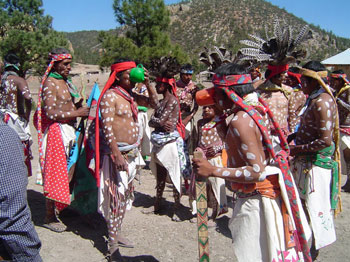
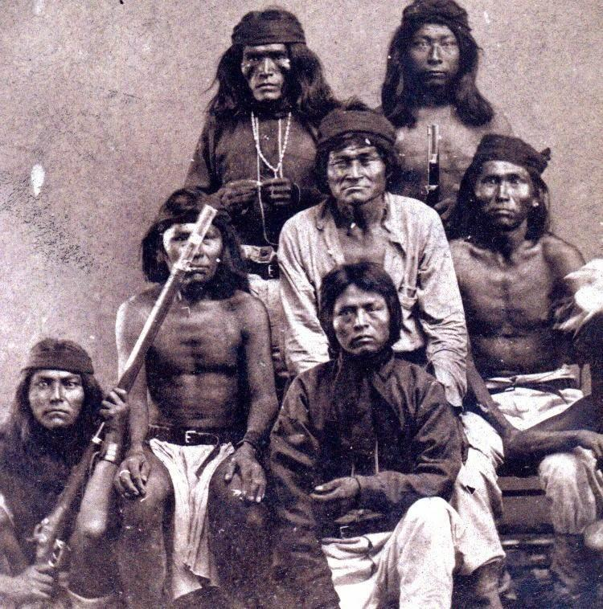
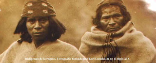
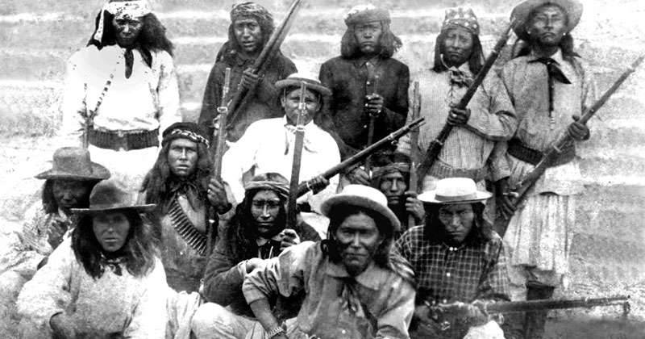

Bienvenidos a la materia de SCR como ya fue la introducción de la misma, en esta sección hablaremos acerca de los primeros pueblos etnicos del estado de Chihuahua. Donde se hablara un poco de donde eran sus origenes y también su estilo de vida.

El término pima designa al pueblo indígena que habita en la Sierra Madre Occidental, donde colindan el sureste de Sonora y el suroeste de Chihuahua.
Los pimas se nombran a sí mismos o'ob, que significa "la gente", "el pueblo". Con el término pima se designa a un conjunto muy variado de sociedades indígenas, como los pimas del desierto, los pimas de la sierra, o los pimas gileños. Esta etnografía se refiere a los pimas bajos, quienes ocupan la zona serrana. A este pueblo se le designa como la "rama serrana de los pimas bajos". A los mestizos o "blancos" se les designa con el término yori.
Los tepehuanes (Cultura tepehuana) llamados también O'dam, o indios Odami. Tepehuanes en náhuatl significa "habitantes de las montañas" o "gente de montaña", "tepe" procedentes de tepetl que significa "montañas" y "huan" que significa "vivienda"
El pueblo tepehuane son mexicanos nativos del noroeste, oeste y algunas partes del centro-norte. Sus aldeas en el momento de la conquista española abarcaron un amplio territorio a lo largo de la Sierra Madre Occidental. Los tepehuanes tienen asentamientos en el actual estado de Durango. Los indios tepehuanes tienen el territorio más grande de Aridoamérica

Los tobosos habitaban el área del Bolsón de mapimi (al este de Chihuahua y al oeste de Coahuila). Frecuentemente se resistieron a la intervención española, atacando los asentamientos a su alcance. Especialmente durante el siglo XVII representaron un problema para el Gobierno central.
El grupo indígena toboso fue una de tantas tribus ya desaparecidas de Aridoamérica, al norte de la actual República Mexicana. Eran nómadas, bandoleros, devoradores de ganado y antropófagos. Habitaban entre el norte de México y sur de Estados Unidos, al este del estado de Chihuahua y oeste de Coahuila, por el Bolsón de Mapimí, la cuenca endorreica localizada en el centro-norte de la Altiplanicie Mexicana.

El nombre genérico que recibían los miembros de esta etnia extinta se les dio por la cantidad de restos de conchas que se encontraban en las riberas del río que habitaban. El territorio de los conchos se situaba desde el área de la cuenca del Río Conchos hasta el Río Bravo en el norte del estado mexicano de Chihuahua. Desde la Sierra Madre Occidental hasta las actuales Ciudad Ojinaga, Chihuahua y Presidio, Texas. Sin embargo, este lugar al otro lado de la frontera entre México y Estados Unidos, según Emilio Langberg, parece haber sido un sitio de comercio entre las tribus amigables antes de la llegada de los españoles a la zona. Para esa época, la de la llegada de los europeos, los conchos eran el grupo étnico que mayor extensión territorial ocupaban en el área de lo que hoy se conoce como el estado de Chihuahua.

Los apaches eran un grupo de naciones indias, culturalmente cercanas, de zonas de Arizona, New Mexico, Texas, Sonora, Chihuahua y Coahuila. La primera vez que se tiene constancia de la utilización del término “apache“, fue el 9 de septiembre de 1598, por parte del explorador Juan de Oñate, en el pueblo de San Juan (Rio Arriba County, New Mexico), habiéndoselo oído a los zuñi, parte de los indios Pueblo, del oeste de New Mexico, que les llamaban “apachu“, que significa “enemigo“. Ésta es la teoría más aceptada pero existe otra. La tribu yuma de los yavapai decían “e-patch“, que significa “hombres que luchan” o “la lucha contra los hombres”. Los yavapais decían para referirse a “la gente” como “Apátieh” o “Apádje“.